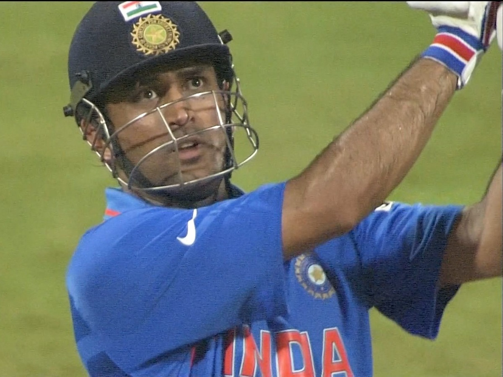

Mahendra Singh Dhoni
“You don't play for the crowd, You Play For the Country”

Mahi Hitting the Last Ball of 2011 World Cup at Wankhede Stadium
List of Trophies won by MS Dhoni
| Trophy | Number of Occasions |
|---|---|
| ODI World Cup | 1 |
| T20 World Cup | 1 |
| ICC Champions Trophy | 1 |
| Border Gavaskar Trophy | 3 |
| Asia Cup | 2 |
| CB Series | 1 |
| Time Test Mace Awardees | 2 |
| Time ODI Shield Awardee | 1 |
| CLT20 | 2 |
| IPL | 4 |
“We can find out the area where the ball landed—and which seat it was flying to—after Dhoni
smashed it to win the 2011 World Cup. We can paint and decorate the seat in a unique way to celebrate
Dhoni’s association with Wankhede Stadium… We can have a plaque on that seat with some special text to honour that moment,”
---Ajinkya Naik